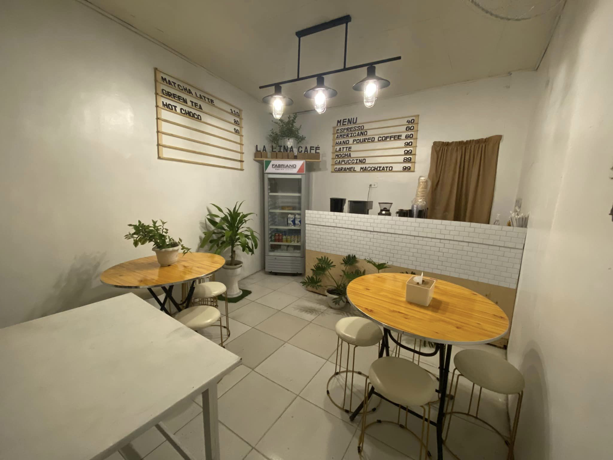

ABOUT US
ABOUT US
Our Story
It was our dream to build our own coffee shop since the likes are far from our barangay. We wish to provide our people coffee that is affordable yet good quality. The name La Lina Café came from out grandmother, Catalina Daluz. The "La" stands for Lola, and "Lina" came from Catalina.
